Scroll or pinch to zoom Drag to pan Press Esc to close
PC-DAPS
PC-DAPS keeps multiple candidate solutions alive until the prior can distinguish them, avoiding premature mode selection and ground-truth-based best-of-k evaluation.
Diffusion models have become strong priors for solving inverse problems. However, nonlinear inverse problems such as phase retrieval remain challenging when multiple measurement-consistent solutions are distinguishable only by the prior; we call such measurements ambiguous. Existing diffusion-based samplers rely on local approximations during reconstruction. For an ambiguous measurement, these approximations can allow measurement guidance to favor a measurement-consistent mode that is close to a prior-supported mode but is itself not supported by the prior. Evaluation often masks this type of failure by reporting the best-of-k runs, where the best is selected using ground truth.
We introduce Prior-Consistent DAPS (PC-DAPS), a variant of Decoupled Annealing Posterior Sampling (DAPS) designed to address this failure case by maintaining multiple candidate solutions within a single sampling run. As annealing noise decreases, PC-DAPS progressively prunes and replaces weaker candidates according to their prior consistency, without any ground-truth access. PC-DAPS reduces the incidence of prior-inconsistent samples and improves nonlinear reconstruction quality while preserving sample quality on linear inverse problems.
Measurement consistency is not enough. In Fourier phase retrieval, an image, its 180° rotation, its translations and its color-channel sign flips all produce the same Fourier magnitude. They have identical likelihood \(p(y\mid x)\), but very different posterior probability: an upside-down or color-flipped face fits the measurement perfectly, yet a prior concentrated on upright faces should never produce it. We call such reconstructions prior-inconsistent. They show up in classical phase-retrieval methods, deep-learning approaches, and diffusion-based solvers alike.
Best-of-4 compares every run with the ground truth…
Best-of-k hides the failure. Results on ambiguous problems are usually reported as best-of-k: run the solver k times and keep the reconstruction closest to the ground truth. This uses information that does not exist at test time, and it throws away the k−1 other samples, including the prior-inconsistent ones.
Premature mode selection. Diffusion solvers apply the prior along a sampling trajectory, through a local denoising approximation centred on a single clean-image estimate. At high noise several prior modes remain plausible, but a trajectory can commit early to a prior mode that does not explain the measurement. Measurement guidance then pulls it to the nearest measurement-consistent solution, which the prior may not support, and later renoising rarely lets it escape. PC-DAPS instead delays this decision until the prior is informative enough to make it, and makes it with the prior, not with the ground truth.
PC-DAPS runs one DAPS annealing with a bag of \(K\) particles under the same measurement \(y\), each with its own initialization and noise. It changes two things in DAPS: the denoising distribution \(p(x_0\mid x_t)\) becomes a Gaussian mixture estimated from the bag, and a prior-based gate replaces trapped particles by copies of prior-consistent ones.
↻ repeat from \(\sigma_{\max}\) down to \(\sigma_{\min}\) → return all \(K\) particles as samples
DAPS approximates \(p(x_0\mid x_t)\) by a single isotropic Gaussian \(\mathcal N(\hat x_0(x_t), r_t^2 I)\) around one point estimate, so its Langevin step only looks for measurement-consistent points close to that estimate. PC-DAPS uses the bag instead. Before pruning it is a uniform mixture centred at each particle's clean estimate with the bag's diagonal variance; after pruning, each surviving cluster \(\mathcal C_m\) contributes one component:
\[ q(x_0\mid x_t)=\sum_{m=1}^{M}\pi_m\,\mathcal N\big(x_0;\mu_m,\Sigma_m\big), \] \[ \pi_m=\frac{|\mathcal C_m|}{K},\qquad \mu_m=\frac{1}{|\mathcal C_m|}\sum_{x^{(k)}\in\mathcal C_m}\tilde x_0^{(k)},\qquad \Sigma_m=\operatorname{diag}\!\big(\operatorname{Var}_{\mathcal C_m}\tilde x_0^{(k)}\big). \]Its score is available in closed form and drops into the DAPS Langevin update: \(\nabla_{x_0}\log q(x_0\mid x_t)=\sum_m q_m(x_0)\,\Sigma_m^{-1}(\mu_m-x_0)\). The Langevin dynamics are now discouraged from leaving the prior modes found by the bag, rather than from leaving one point, and the covariances follow the geometry of the prior instead of a heuristic radius.
When. For a linear operator, Jensen's inequality gives \(\bar r \ge r^\star\), where \(\bar r=\frac1K\sum_k\|\mathcal A(x^{(k)})-y\|^2\) and \(r^\star=\|\mathcal A(\bar x)-y\|^2\) for the bag mean \(\bar x\). When \(\bar r<r^\star\), the bag occupies several wells of the likelihood, which is when mode-level pruning becomes meaningful.
Which. The bag is clustered (a BIC-selected GMM on a PCA projection of downsampled clean estimates), and each cluster is scored by how well its particles survive re-noising and denoising at several noise scales \(\mathcal S\):
\[ s(\mathcal C_m)=-\frac{1}{|\mathcal C_m|\,|\mathcal S|}\sum_{x\in\mathcal C_m}\sum_{\sigma\in\mathcal S}\big\|x-D_\theta(x+\sigma\epsilon;\sigma)\big\|^2 . \]A sample near the data manifold denoises back to itself at every scale. Clusters scoring below \((1+\gamma)\max_m s(\mathcal C_m)\) are pruned, and their particles are replaced by copies of survivors. The threshold \(\gamma\) is calibrated once per dataset from within-cluster score variation; no ground truth and no extra classifier are involved.
pruned = false.pruned, \(\bar r<r^\star\) and clustering finds \(M>1\) clusters: score clusters with \(s(\mathcal C_m)\), replace particles of low-scoring clusters by copies of survivors, set pruned = true.A two-atom prior \(p(x_0)=\tfrac12(\delta_{-a}+\delta_{a})\) and a quadratic measurement \(\mathcal A\) that takes the same value at \(x_1=-a\) and at \(x_3=a+b\), a point the prior does not support. The exact posterior puts most mass on \(x_1\) and some on \(x_2=a\). Watch the particles as the noise level \(\sigma\) is annealed from 10 to 0.1: DAPS particles that pick the \(+\) side early slide to the hallucinated \(x_3\); PC-DAPS prunes that cluster at \(\sigma=0.3\) and moves its particles to the prior-consistent mode.
One Langevin refinement at a single noise level, from the same start \(\hat x_0\) and with the same noise, under different approximations of \(p(x_0\mid x_t)\). The prior (gray) is L-shaped and the measurement observes only \(x_2\) (blue band). A Gaussian around \(\hat x_0\) makes Langevin find the nearest measurement-consistent point, which is off the prior. The mixture built from the bag already covers the vertical branch another particle found, so the run ends on the prior, as it does under the exact \(p(x_0\mid x_t)\).
Best-of-k scores hide the samples that were thrown away, so we classify every sample as faithful, upside-down / color-inverted, or failed. DAPS is run four times; PC-DAPS is run once with a bag of four.
Upside-down / color-inverted samples: FFHQ 14.5% → 1.5%, ImageNet 42% → 30.5%.
Quantitative evaluation on FFHQ and ImageNet over 100 test images, seven linear and three nonlinear inverse problems, measurement noise \(\beta_y=0.05\). PC-DAPS produces 4 samples per input and its metrics are averaged over them. For phase retrieval, all other methods report the oracle best of 4 runs (†), chosen with the ground truth. Nonlinear tasks report mean ± standard deviation over images. Bold: best, underline: second best.
| Task | Method | FFHQ | ImageNet | ||||
|---|---|---|---|---|---|---|---|
| PSNR ↑ | SSIM ↑ | LPIPS ↓ | PSNR ↑ | SSIM ↑ | LPIPS ↓ | ||
| Super-resolution 4× | PC-DAPS | 30.25 | 0.841 | 0.166 | 26.44 | 0.714 | 0.245 |
| DAPS | 29.36 | 0.782 | 0.173 | 25.51 | 0.639 | 0.281 | |
| DDNM | 28.01 | 0.797 | 0.196 | 23.92 | 0.606 | 0.472 | |
| DPS | 25.86 | 0.753 | 0.269 | 21.13 | 0.489 | 0.361 | |
| FPS-SMC | 28.45 | 0.812 | 0.206 | 24.79 | 0.705 | 0.311 | |
| Super-resolution 16× | PC-DAPS | 22.21 | 0.623 | 0.368 | 20.90 | 0.454 | 0.535 |
| DAPS | 22.14 | 0.597 | 0.373 | 20.35 | 0.450 | 0.545 | |
| DPS | 21.09 | 0.586 | 0.570 | 18.41 | 0.384 | 0.592 | |
| FPS-SMC | 22.09 | 0.604 | 0.496 | 18.88 | 0.423 | 0.588 | |
| High-pass filter | PC-DAPS | 18.84 | 0.815 | 0.155 | 17.33 | 0.778 | 0.204 |
| DAPS | 16.85 | 0.702 | 0.204 | 15.51 | 0.732 | 0.217 | |
| DPS | 4.92 | 0.437 | 0.687 | 12.84 | 0.606 | 0.473 | |
| FGPS | 18.04 | 0.761 | 0.184 | 14.77 | 0.708 | 0.229 | |
| Inpaint (box) | PC-DAPS | 24.73 | 0.825 | 0.152 | 21.56 | 0.738 | 0.221 |
| DAPS | 24.69 | 0.746 | 0.166 | 21.12 | 0.714 | 0.229 | |
| DDNM | 24.44 | 0.839 | 0.233 | 21.67 | 0.746 | 0.321 | |
| DPS | 22.51 | 0.792 | 0.209 | 18.94 | 0.722 | 0.257 | |
| FPS-SMC | 24.86 | 0.823 | 0.146 | 22.16 | 0.726 | 0.208 | |
| Inpaint (random) | PC-DAPS | 31.83 | 0.875 | 0.121 | 28.18 | 0.781 | 0.159 |
| DAPS | 30.73 | 0.801 | 0.129 | 27.32 | 0.725 | 0.189 | |
| DDNM | 29.87 | 0.816 | 0.123 | 31.14 | 0.839 | 0.193 | |
| DPS | 25.46 | 0.823 | 0.203 | 23.52 | 0.745 | 0.297 | |
| FPS-SMC | 28.17 | 0.824 | 0.258 | 24.55 | 0.699 | 0.318 | |
| Gaussian deblurring | PC-DAPS | 30.35 | 0.839 | 0.164 | 26.37 | 0.703 | 0.250 |
| DAPS | 29.60 | 0.787 | 0.179 | 25.94 | 0.659 | 0.267 | |
| DDNM | 28.18 | 0.805 | 0.214 | 28.11 | 0.701 | 0.281 | |
| DPS | 25.87 | 0.764 | 0.219 | 20.31 | 0.598 | 0.397 | |
| FPS-SMC | 26.47 | 0.771 | 0.251 | 23.86 | 0.603 | 0.390 | |
| Motion deblurring | PC-DAPS | 32.13 | 0.872 | 0.119 | 29.06 | 0.800 | 0.162 |
| DAPS | 31.65 | 0.837 | 0.137 | 28.66 | 0.770 | 0.175 | |
| DPS | 24.52 | 0.801 | 0.246 | 18.96 | 0.629 | 0.423 | |
| FPS-SMC | 27.31 | 0.825 | 0.229 | 24.60 | 0.645 | 0.329 | |
| Phase retrieval | PC-DAPS | 30.09±1.77 | 0.834±0.089 | 0.152±0.088 | 21.75±1.10 | 0.469±0.132 | 0.373±0.128 |
| DAPS | 29.66±4.17 | 0.770±0.100 | 0.177±0.090 | 20.98±6.72 | 0.461±0.226 | 0.387±0.163 | |
| DPS | 17.64±2.97 | 0.441±0.129 | 0.410±0.090 | 16.81±3.61 | 0.427±0.143 | 0.447±0.099 | |
| PnP-DM | 21.70±5.50 | 0.542±0.122 | 0.398±0.101 | 17.68±6.70 | 0.458±0.191 | 0.499±0.101 | |
| DPnP | 20.39±6.15 | 0.592±0.139 | 0.392±0.173 | 16.74±3.21 | 0.487±0.196 | 0.535±0.107 | |
| RED-Diff | 15.72±4.41 | 0.401±0.191 | 0.588±0.089 | 15.11±3.68 | 0.389±0.058 | 0.529±0.127 | |
| HIO | 13.53±2.50 | 0.359±0.093 | 0.726±0.068 | – | – | – | |
| Nonlinear deblur | PC-DAPS | 29.04±0.82 | 0.804±0.017 | 0.180±0.023 | 27.63±2.58 | 0.739±0.053 | 0.211±0.032 |
| DAPS | 28.49±1.52 | 0.762±0.031 | 0.191±0.031 | 27.25±3.18 | 0.717±0.089 | 0.213±0.055 | |
| DPS | 23.39±2.01 | 0.623±0.082 | 0.278±0.060 | 22.49±3.20 | 0.591±0.101 | 0.306±0.081 | |
| RED-Diff | 30.72±0.56 | 0.793±0.029 | 0.162±0.032 | 29.91±1.36 | 0.751±0.024 | 0.214±0.080 | |
| High dynamic range | PC-DAPS | 28.25±1.17 | 0.839±0.020 | 0.163±0.039 | 26.01±2.77 | 0.822±0.099 | 0.173±0.094 |
| DAPS | 27.67±3.57 | 0.839±0.078 | 0.165±0.069 | 25.80±4.37 | 0.819±0.113 | 0.177±0.106 | |
| DPS | 22.73±6.07 | 0.591±0.141 | 0.264±0.156 | 19.23±2.52 | 0.582±0.082 | 0.503±0.106 | |
| RED-Diff | 21.94±3.52 | 0.508±0.081 | 0.261±0.091 | 21.88±5.77 | 0.598±0.097 | 0.281±0.191 | |
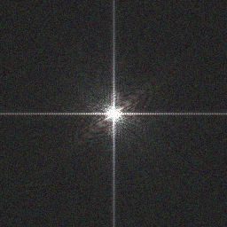
Measurement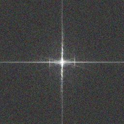
Measurement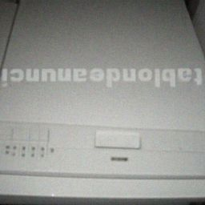
upside-down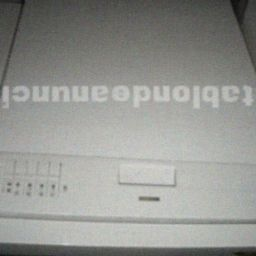
upside-down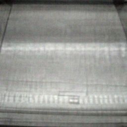
failed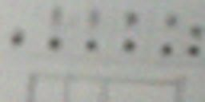
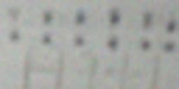
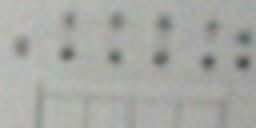
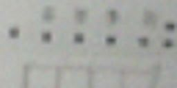
PC-DAPS resolves the upside-down orientation inconsistencies seen in independent DAPS runs. The diversity rows show that, although PC-DAPS is globally stable, it preserves subtle variation among the four particles of a single run.
More PC-DAPS reconstructions; each row is one measurement. Click an image to zoom.
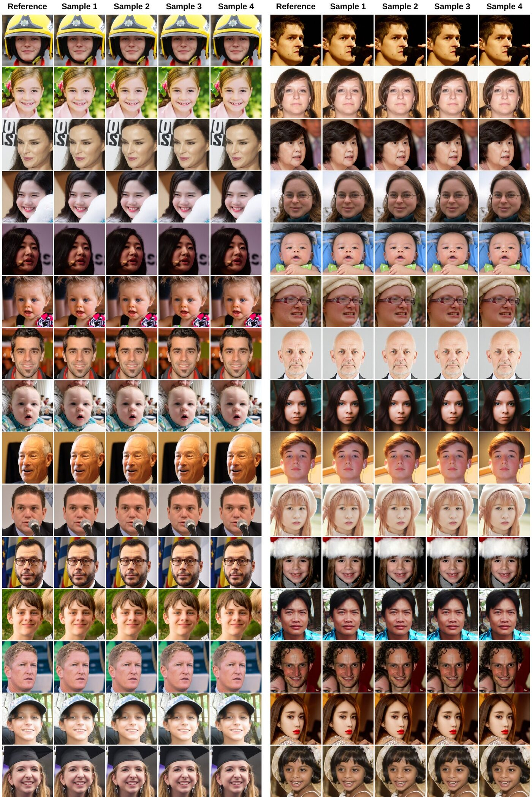
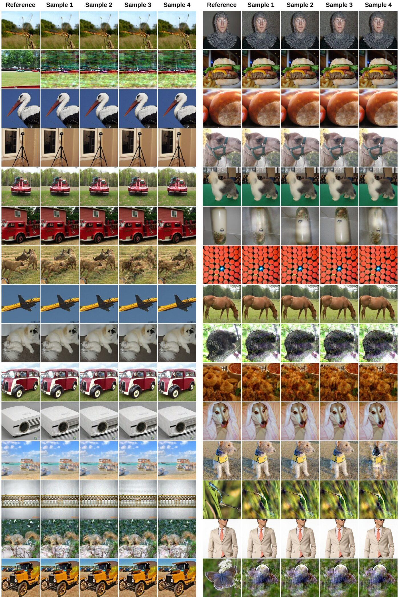
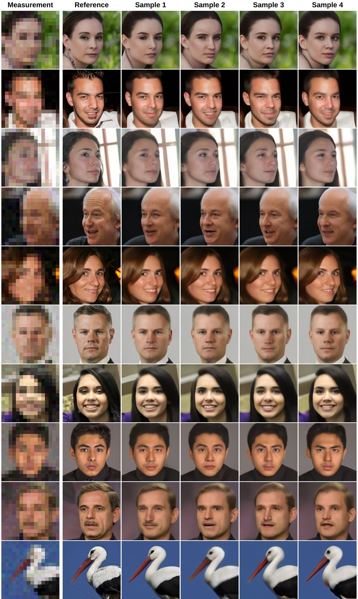
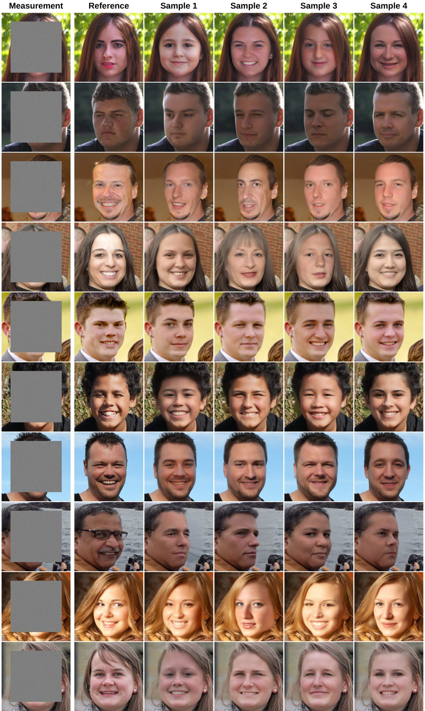
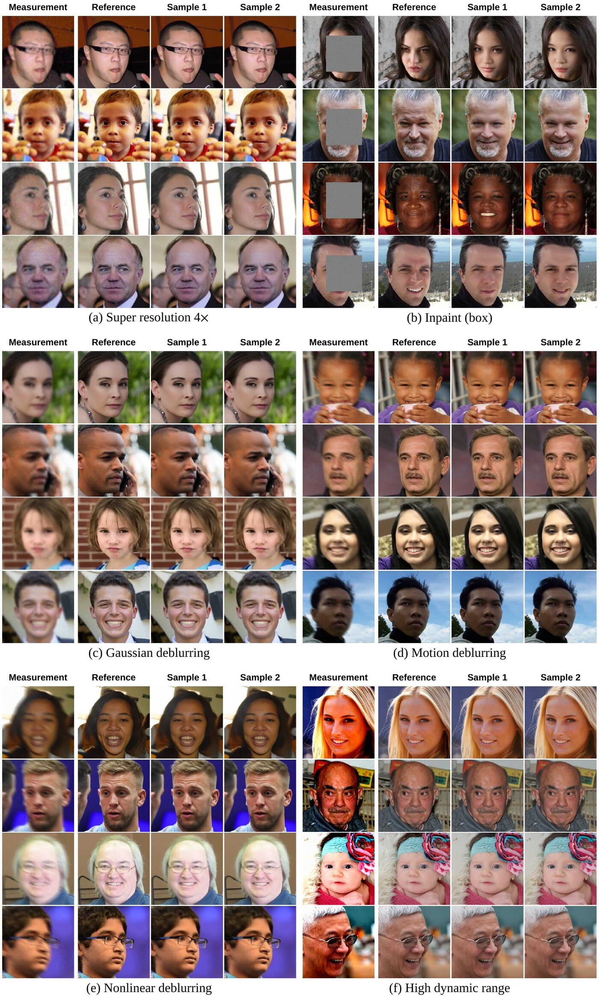
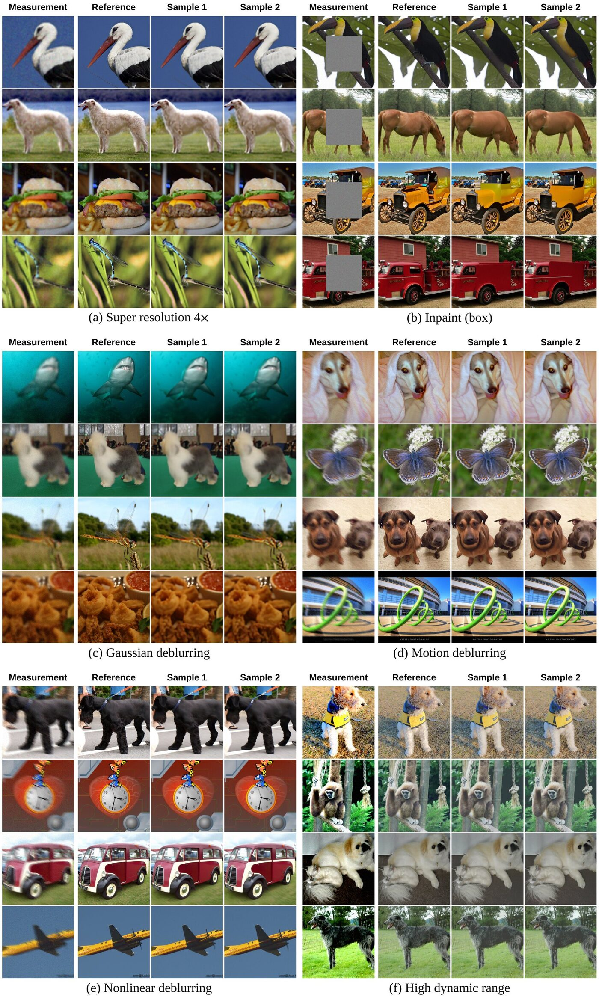
Scroll or pinch to zoom Drag to pan Press Esc to close